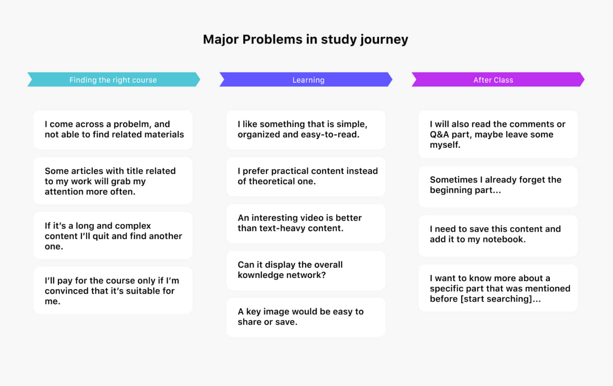
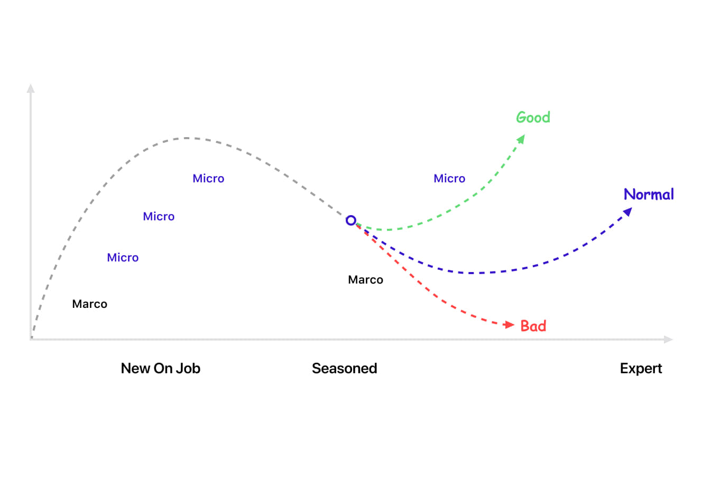
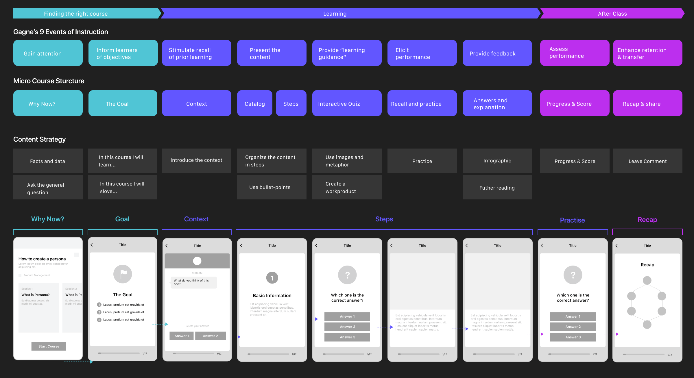

A playful way to do micro learning in just a swipe.
Company
Runwise Consultant
Date
July 2018 - Jan 2019
Team
Refuel Product Team
My Role
UX/UI Designer
Overview
Micro-learning by swiping cards
The usual senary of micro-learning is reading articles, watching videos, or taking an online course on
the subway. These media are not initially made for educational, so they have limitations for getting the
learners involved.
Refuel App is where you can study skills like time-management, design thinking, and communications. The
courses are displayed in a card-based interactive short session. Our goal is to help users learn by just
swiping cards and tapping quiz.
The Goal
We aimed to develop better tools and content for fragmentation-learners:
Courses that are effective for short-time learning
A systematic learning process
Make it fun and easy!

Research
Current Problems of learning
We had a few interview with the users and tried to map out their current learning situation.
Clear and organized content is preferred. Our users start their journey after work and tired,
complicated
or profound materials are not engaging.
A picture is worth a thousand words. Well-written articles include images as an explanation or
inclusion.
They are the most vital and share-worthy part.
Needs to get involved. Users mentioned that article needs to related to the actual situation.
Questions
and quizzes were also considered useful materials.
Research
Understanding Micro Learning
After some research, our team found that this model fits our research results: most of the beginners
will use micro learning more often, while some of the senior learners prefer macro learning.
The reason why most of the content on the market are inefficient is that they are not organized in a
marco learning structure. The users always just have enough time to read a single chapter of it,
therefore it is hard to understanding and out of context.

While the micro learning model thrilled us, we also understanding that it is not for everyone, and
definetly not for every topic. Here are some benifits and disadvantages of it:
Pros of Micro-Learning
Faster mobile learning: Bited size content suit the working style and attention span of our users
Better understanding and retention: A short, simple micro learning unit can be completed and retained
more easily than a more complex one.
Cons of Micro-Learning
Not for complex subject: Some highly detailed or complex topic may not be practical to be introduced
in a small course.
Not a replacement of macro learning: Micro courses are great for an introduction to a topic or for
refreshing knowledge. But it still need a macro course to fully understanding the complex subject.
Aligining the Design with Micro Learning
First we create a learning map according to Gagné’s Nine Events of Instruction, and wireframe the
overall structure of the course with content strategy of each step. The learning process is divided into
three parts: Introducing, Learning, and After Class.
Next, I started to build the wireframe of each step. After some previous research, we thought our product
should focus on organization and structure. The wireframe should also help user build an overview of the
content. Some icons and numeric steps also indicated the structure as well.

Mental Model
Flash card metaphor
Inspired by the popular flash card which is used to learn new words, I came up with the idea of using
the mental model in showing quiz and answers. The question is written on one side, and after tapping
the button, the answer would showed on the other side.
Rich interaction content
Rich interaction is an important part for creating the “aha moment” for the learners. After serval round
of user interview, we concluded some of the most common and useful.
Interaction
Singular/Multiple Choice
Singular and multiple choice is the basic of quiz, and it can be found everywhere on the courses.
With a friendly copywrite, it gains users’ attention between text heavy content.
Interaction
Dialog Simulator
The best way to present a dialog scenario is... well, to actually present a dialog! Everyone is using
instant-messaging apps these days, so why not just create an interface to recall the scenario?
Interaction
Hot Spot Image
The tiny screen of mobile phone means that it couldn’t hold a large-detailed picture. The hot spot
image uses zoom-in and zoom-out motion to indicated a more detailed view. It also allows users to
take control of what to read.
Illustration and Infographic
The infographic or illustration in recap part serves as a recall of the content. We hope that after
the 5 min micro-course, the learners can fully understanding the knowledge by just looking at this
image. It is also very likely that the learners would share or save it themselves.
There's not much tutorial about how to make infographics for mobile device. So I have to learn the
way it was made for poster, and think about how it would looks like when it's responsive.
User Feedback
Most of the users said that they’ve
never encountered with anything online course quite like this. Our “5min Micro Course”
structure and rich interactive content leave a fresh impression and stand out in the
diversified competition.
“The interactive course is fun and great for introducing new knowledge for me.”
What I Learned
Being part of the Refuel team is a unique experience for me. I praticed product design skills, and also
have a great journey exploring how to learn.
Concepts can be better delivered by visualizing. I faced the challenge of visualizing many types
of content is this course. It turned out that not every topic can be transformed into a micro-course,
but simply drawing shapes and laying out mindmaps can help people understand the concepts way faster.
Thinking out loud is powerful.
Learning how to learn. I was introduced to the concept of micro and marco learning during this project.
It change my mind of understanding the learning behaviour later. Just like any other skills,
understanding how it works makes you improve faster.